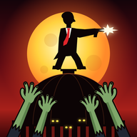

나 혼자 불참 — 여의도 좀비 대란
여의도 풍자 좀비 디펜스 슈팅 · Android
의원 300명 중 299명이 좀비가 됐다. 본회의에 불참한 당신만 빼고.
바리케이드를 지키며 몰려오는 정치인 좀비를 막아 내는 세로 화면 슈팅 게임입니다. 화면을 끌어서 조준하고, 누르고 있으면 발사합니다.
- 시점 3가지: 1인칭 · 3인칭(어깨 너머) · 탑뷰
- 전장 6곳, 웨이브마다 나오는 보스 30명, 총 6종과 스킬
- 무료 · 광고 포함(보상을 주는 광고는 원할 때만) · 회원 가입과 로그인 없음
- 인터넷 연결 없이도 플레이할 수 있습니다(광고와 광고 보상에는 연결이 필요).
- 피가 튀고 팔다리가 떨어져 나가는 폭력적인 표현이 있습니다.
다운로드
Google Play 출시를 준비하고 있습니다.
링크
개발자와 연락처
개발자: 푸렁이
게임 안 표기: 만든 사람 · 푸렁이(대현)
문의·의견·버그 제보: pureongi88@gmail.com
게임 안에서는 설정 → 문의하기 로도 메일을 보낼 수 있습니다. 버그를 알려 주실 때는 휴대폰 기종과 어떤 화면이었는지 함께 적어 주세요.
이 게임은 픽션입니다. 실존 인물·정당·단체와 관계없으며 모든 진영을 공평하게 놀립니다.
English
Developer page for the Android game 「나 혼자 불참 — 여의도 좀비 대란」, a satirical zombie defence shooter (Korean language only for now). Free with ads, no account needed.
Contact: pureongi88@gmail.com · Privacy Policy
This game is fiction. It has nothing to do with real people, parties or organisations, and it pokes fun at every side equally.